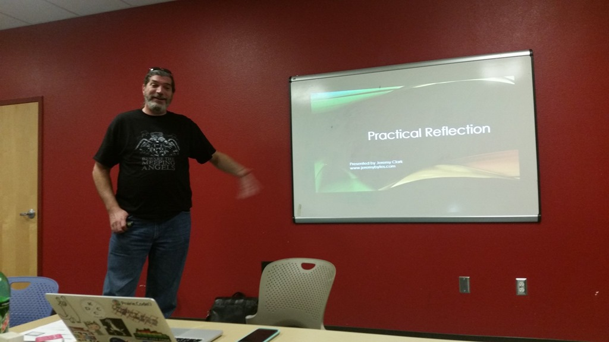

](/images/IDTest_AsGenerated.png){kind=link}
](/images/IDTest_Workaround.png){kind=link}
Barry S. Stahl (him/his) - Barry is a .NET Software Engineer who has been creating business solutions for enterprise customers for more than 30 years. Barry is also an Election Integrity Activist, baseball and hockey fan, husband of one genius and father of another, and a 30+ year resident of Phoenix Arizona USA. When Barry is not traveling around the world to speak at Conferences, Code Camps and User Groups or to participate in GiveCamp events, he spends his days as a Solution Architect for Carvana in Tempe AZ and his nights thinking about the next AZGiveCamp event where software creators come together to build websites and apps for some great non-profit organizations.
Tag: csharp
Back to Basics–the Double Data Type
Posted by bsstahl on 2019-02-12 and Filed Under: development
What is the result of converting a value that is close to, but not at, the maximum value of an Int64 from a double to a long (Int64)? That is, what would be the result of an expression like:
(long)((double)(Int64.MaxValue – 1))
- 9223372036854775806 (263-2, the correct value numerically)
- -9223372036854775808 or another obviously incorrect value
- OverflowException
- Any of the above
Based on the framing of the question it is probably clear that the correct answer is "D". It is possible, depending on the hardware details and current state of your system, for any of the 3 possible outcomes. Why is this and what can we do to be sure that the results of our floating-point operations are what we expect them to be?
Before we go into the ways we can modify the behavior of our operations, let's take a look at the two data types in question, Int64 and Double.
An Int64 value, also known as a long, is a fairly straightforward storage mechanism that uses 63 bits for the value and 1 bit to represent the sign. Negative numbers are stored in twos-complement form to make mathematical operations simpler. The result is that the Int64 type can store, with perfect fidelity, any integral value between -9223372036854775808 and 9223372036854775807.
The Double data type on the other hand is far more complex. It requires storage for continuous values, not just integers. As a result, the Double data type uses 52 bits to store the mantissa (value), 11 bits to store the exponent (order of magnitude) and the remaining bit of the 64-bit structure to store the sign. Both the exponent and mantissa are shifted by a few bits based on some fairly safe assumptions. This gives us a range of values for the exponent of -1023 to 1024 and a little more than 52 bits of fidelity in the mantissa.
It is this difference in fidelity; 63 bits for Int64 and roughly 52 bits for Doubles, that can cause us problems when converting between the two types. As long as the integer value can be stored in less than 52 bits (value < 4503599627370495) values can be converted back and forth between Int64 and Double without any data loss. However, as soon as the values cannot be represented completely in 52 bits, data loss is likely to occur.
To store such a value in a Double data type, the exponent is adjusted higher and the best available value for the mantissa is found. When converted back to Int64, this value will be rounded automatically by the framework into the closest integer value. This resulting value may, or may not, be exactly the same as the original value. To see an example of this, execute the following code in your favorite C# environment:
Console.WriteLine((long)9223372036854773765.0);
If your system is like mine, you’ll get an answer that is not the same as the original value. On my system, I get the result 9223372036854773760. It is said that this integer does not “round-trip” since it cannot be converted into a Double and then back to an integer.
To make matters worse, the rounding that is required for this conversion can be unsafe under certain conditions. On my machine, if the values get within 512 of Int64.MaxValue, even though they don’t exceed it, attempting the conversion may result in an invalid result, or an OverflowException. Even performing the operation without overflow checking using the unchecked keyword or compiler switch doesn't improve things since, if done unchecked, any overflow in the operation will result in an incorrect value rather than an exception. I prefer the exception in this kind of situation so I generally keep overflow checking on.
The key takeaway for me is that just checking to make certain that a Double value is less than Int64.MaxValue is not enough to guarantee it will convert without error, and certainly does not guarantee the accuracy of any such conversion. Only integer values below 52 bits can be accurately converted into Int64 values.
It is always best to avoid type conversions if possible, but if you are in a situation where it is necessary to convert from large Double values into Integers, I recommend trying some experiments in your production environment to see what range of values will convert accurately. I also highly recommend including very large integers, approaching or at Int64.MaxValue as test data against any method that accepts Int64 values. Values that are very large in the negative direction (nearing Int64.MinValue) are also good candidates to be used as test data in these methods.
I’ve attached a number of resources below that I used in my research to produce this article, and to fix the bug I caused doing this kind of conversion. If you have run into this situation and come up with an interesting way of handling it, or if the results of your conversions are different than mine, please let me know about it on Twitter.
Resources
- Double Struct in the .NET API Browser
- Convert.ToInt64 method in the .NET API Browser
- double data type in the C# Language Reference
- John Skeet on Binary floating point numbers in .NET
- John Skeet’s code to convert doubles to the string representation of their exact decimal value
Tags: type csharp clr data structures
Intro to WebAssembly Using Blazor
Posted by bsstahl on 2018-09-26 and Filed Under: event
I will be speaking tonight, 9/26/2018 at the Northwest Valley .NET User Group and tomorrow, 9/27/2018 at the Southeast Valley .NET User Group. I will be speaking on the subject of WebAssembly. The talk will go into what WebAssembly programs look and act like, and how they run, then explore how we as .NET developers can write WebAssembly programs with Microsoft’s experimental platform, Blazor.
Want to run your .NET Standard code directly in the browser on the client-side without the need for transpilers or browser plug-ins? Well, now you can with WebAssembly and Blazor.
WebAssembly (WASM) is the W3C specification that will be used to provide the next generation of development tools for the web and beyond. Blazor is Microsoft's experiment that allows ASP.Net developers to create web pages that do much of the scripting work in C# using WASM.
Come join us as we explore the basics of WebAssembly and how WASM can be used to run existing C# code client side in the browser. You will walk away with an understanding of what WebAssembly and Blazor can do for you and how to immediately get started running your own .NET code in the browser.
The slide deck for these presentations can be found here IntroToWasmAndBlazor-201809.pdf.
Tags: apps community csharp framework html5 introduction microsoft presentation phoenix speaking user group ux wasm webassembly w3c
Is a Type an Implementation of an Interface?
Posted by bsstahl on 2016-11-17 and Filed Under: development
One of the techniques I recommend highly in my Simplify Your API talk is the use of extension methods to hide the complexity of lower-level API functionality. A good example of a place to use this methodology came-up last night in a great Reflection talk by Jeremy Clark (Twitter, Blog) at the NorthWest Valley .NET User Group.

Jeremy was demonstrating a method that would spin-through an assembly and load all classes within that assembly that implemented a particular interface. The syntax to do the checks on each type were just a bit more obtuse than Jeremy would have liked them to be. As we left that talk, I only half-jokingly told Jeremy that I was going to write him an extension method to make that activity simpler. Being a man of my word, I present the code below to do just that.
Tags: assembly api class code sample coding practices community csharp development extension method framework generics interface presentation professional development reflection user group
Code Coverage Teaches and Protects
Posted by bsstahl on 2016-10-14 and Filed Under: development
I often hail code coverage as a great tool to help improve your code base. Today, my use of Code Coverage taught me something about the new .NET Core tooling, and helped protect me from having to support useless code for the lifespan of my project.
In the code below, I used a common dependency injection pattern. That is, an IServiceProvider object holding my dependencies is passed-in to my object and stored as a member variable. When a dependency is needed, I retrieve that dependency from the service provider, and then take action on it. Since there is no guarantee that the dependency I need will have been placed in the container, I use some common guard logic to protect my code.
templates = _serviceProvider.GetService<IEnumerable<Template>>(); if ((templates==null) || (!templates.Any(s => s.TemplateType==ContactPage))) throw new TemplateNotFoundException(TemplateType.ContactPage, string.Empty);
In this code, I first test that I was able to retrieve a collection of Template objects from the service provider, then verify that the type of Template I need is present in the collection. If either is not the case, an exception is thrown.
I had two tests that covered this section of code, one where the collection was not added to the service provider, the other where an empty collection was added. Both tests passed, however, it wasn't until I looked at the results of the Code Coverage that I realized that the 1st test wasn't doing what I thought it was doing. It turns out that there is actually no way to get a null collection object out of the Microsoft.Extensions.DependencyInjection.ServiceProvider object I am using for my .NET Core apps. That provider simply returns an empty collection if there isn't one in the container. Thus, my check for null was never matched and that branch of code was never executed.
Based on this new knowledge of the behavior of the IServiceProvider, I had a few options. I could:
- Rewrite my test to check for an empty collection. This option seems redundant to me since my check to see if the container holds the template I need is really what I care about.
- Leave the code as-is just in case the behavior of the container changes, accepting that I have what is currently unnecessary and untestable code in my application. I considered this option but it seems to me that a better defense against the unlikely event of a breaking change in the IServiceProvider implementation is described below in option 3.
- Create a new test that verifies the behavior on the ServiceProvider that an empty collection is returned if no collection is supplied to the container. I am not a big fan of this option since it requires me to test OPC (other people's code), and because the risk of this type of breaking change is, in my opinion, extremely low.
- Remove the guard code that tests for null and the test that supports it. Since the code is completely unnecessary, the test itself is redundant because it is, essentially identical to the test verifying that the template I need is in the collection.
I'm sure you've guessed by now that I selected option 4. I removed the guard code and the test from my solution. In doing so, I removed dead code that served no purpose, but would have to be supported through the life of the project.
For those who might be thinking something similar to, "It's nice that the coverage tooling helped you learn about your code, but using Code Coverage as a metric is actually a bad idea so I won't use Code Coverage at all", I'd like to remind you that any tool, such as a hammer or a car, can be abused. That doesn't mean we don't continue to use them, we just make certain that we use them properly. Code Coverage is a horrible way to measure a development team or effort, but it is an outstanding tool and should be used by the development team whenever possible to discover things about the code base.
Tags: abstraction agile assert code analysis code coverage coding practices csharp ioc testing unit testing dotnet
No More Collection Objects
Posted by bsstahl on 2015-10-27 and Filed Under: development
I don't create collection objects anymore.
I know, I know. I was they guy always preaching that every entity that was being collected had to have its own collection object. It was the right thing at the time; if you needed to take an action on an enumeration or list of objects, those actions needed to be done within a strongly-typed collection object to maintain encapsulation. Even if all that was happening was that an inherited List<T> function was being called, that functionality needed to be called on the TCollection object because, if it wasn't, it was likely that the next time logic needed to be performed on the collection, there wouldn't be a place to put it. Collection logic would end up being spread-out around your code rather than encapsulated in the collection. It was also possible that the implementation might change and need to be updated everywhere, instead of in one place.
Today however, that has all changed. Extension methods now allow us, at any time, to add functionality to ICollection<T>, IList<T>, IEnumerable<T> or any other interface or class. We can attach our list or enumeration based actions directly to the list or enumeration class, and do so at any time, since the methods appear the same to the developer as methods directly on the collection type. Thus, the "no place to put it" fear no longer exists. I've even started using this technique for my factory methods to make it clear that what I am creating is, in fact, an IEnumerable<T>, as shown below.
var stations = (null as IEnumerable<Station>).Create(); var localStations = stations.GetNearby(currentLocation);
In this example, both the Create and GetNearby methods are extension methods found in a static class called StationExtensions.
So, the big advantage here is that these methods can be added anytime, meaning we don't need to create an object that we MAY need in the future. This is better adherence to the YAGNI principle so it is a better pattern to follow. But what about disadvantages? Does it hurt us in any way to perform our collection actions this way? I'm not comfortable answering that question with an absolute "no" yet because I don't think I've been using this technique long enough to have covered enough ground with it, but I can certainly say that I haven't found any disadvantages yet. It seems like these extension methods are basically perfect for this type of activity. These methods do everything that the methods of a collection object do, can (and should) be put in a separate module to keep the code together, can be navigated to by Visual Studio in the same way as other methods, and have the same access (private, internal, public) restrictions that collection objects have. About the only thing I can say that is not 100% positive about using these techniques is that the (null as IEnumerable<T>) syntax to create a local variable instance to call the class factory from is not quite as elegant as I'd like it to be.
So you tell me, do you still create collection objects? Have you found any reason why using extension methods in this way is not as good as putting those methods into a strongly-typed collection? Sound off on Twitter and let's talk about it.
Tags: class coding practices csharp development encapsulation entity generics inheritance list visual studio yagni
New OSS Project
Posted by bsstahl on 2014-07-11 and Filed Under: development
I recently started working on a set of open-source projects for Code Camps and other community conferences with my friend Rob Richardson (@rob_rich). In addition to doing some good for the community, I expect these projects, which I will describe in more detail in upcoming posts, to allow me to experiment with several elements of software development that I have been looking forward to trying out. These include:
- Using Git as a source control repository
- Using nUnit within Visual Studio as a test runner
- Solving an optimization problem in C#
- Getting to work on a shared project with and learning from Rob
As an enterprise developer, I have been using MSTest and Team Foundation Server since they were released. My last experience with nUnit was probably about 10 years ago, and I have never used Git before. My source control experience prior to TFS was in VSS and CVS, and all of that was at least 6 or 7 years ago.
So far, I have to say I'm very pleased with both Git for source control, and nUnit for tests. Honestly, other than for the slight syntactical changes, I really can't tell that I'm using nUnit instead of MSTest. The integration with Visual Studio, once the appropriate extensions are added, is seamless. Using Git is a bit more of a change, but I am really liking the workflow it creates. I have found myself, somewhat automatically, committing my code to the local repository after each step of the Red-Green-Refactor TDD cycle, and then pushing all of those commits to the server after each full completion of that cycle. This is a good, natural workflow that gives the benefits of frequent commits, without breaking the build for other developers on the project. It also has the huge advantage of being basically unchanged in a disconnected environment like an airplane (though those are frequently not disconnected anymore).
The only possible downside I can see so far is the risk presented by the fact that code committed to the local repository, is not yet really safe. Committing code has historically been a way of protecting ourselves from disc crashes or other catastrophes. In this workflow, it is the push to the server, not the act of committing code, that gives us that redundancy protection. As long as we remember that we don't have this redundancy until we push, and make those pushes part of the requirements of our workflow, I think the benefits of frequent local commits greatly outweigh any additional risk.
As to the other two items on my list, I have already learned a lot from both working with Rob and in working toward implementing the optimization solution. Even though we've only been working on this for a few days, and have had only 1 pairing session to this point, I feel quite confident that both the community and I will get great benefit from these projects.
In my next post, I'll discuss what these projects are, and how we plan on implementing them.
Tags: ai code camp community conference csharp enterprise mstest nunit open source professional development tdd testing unit testing
Windows 8 Store Development for Enterprise Devs
Posted by bsstahl on 2013-02-28 and Filed Under: development
or, How I found my Passion for Windows 8 Store App Development
Update: My first Windows Store app was published on March 27, 2013 and can be found here.
I don't have any apps in the Windows 8 Store yet. For that matter, I don't have any apps in the Windows Phone store, or the Apple or Android stores either. I have many ideas for apps, and a number of them in the works for both Windows 8 and Windows Phone, but I have nothing real to show for it yet. Nothing to show for several years of attending sessions at conferences, user groups, and code camps on building these apps; for many hours of hacking on front-end interfaces and business logic. Don’t get me wrong, I've wanted to build these apps, but I didn't have that burning desire that I usually get when I am solving problems with software. You know that desire, the one that compels you to sit in front of a computer for hours at a time until you've completed a solution. I didn't have it.
This recently changed for me -- let me explain.
I have spent most of the last 20 years building enterprise web applications that do most of the work on the server side. My user interfaces have been built in HTML, with some JavaScript for validation and Ajax for dynamic post-backs, but all business rules were housed entirely on the server in either C#, VB or something similar. Even before .NET, in the classic ASP days, my logic executed on the server with VBScript calling components created in Visual Basic. Before that, it was Pascal programs spitting out pure HTML to the console which was then redirected to the browser stream by the web server. As a result, I am very comfortable with using HTML for layout, and multi-purpose languages like C# and VB.Net for the business logic and data access.
In the app world however, this combination of technologies has seemed out-of-reach. In Windows Phone development, I could use C#, but needed to use XAML for layout and style, a technology that I have not yet been able to get comfortable with. For Windows 8 store apps there are more options, including HTML5/JavaScript apps, but I have never been comfortable writing code in JavaScript. The advent of TypeScript has brought us even closer to a solution in my comfort zone where I can get almost a C# style experience with HTML5 as my layout mechanism, but I am still missing key features like LINQ and generics.
Enter Windows Runtime Components. I say “enter”, as if they were new -- they're not, I just apparently allowed myself to forget about them. RT Components can be written in C# (and other languages), but can be called from JavaScript or any Windows 8 Store code, just as if they were written in that same language. RT components can also call into any .NET code that can be executed in a Windows Store App. As a result, I have the power of C# and the .NET Framework at my disposal while writing a JavaScript app. All I have to do is wrap my .NET Windows Store compatible libraries in an RT component, and use JavaScript to bind it to my HTML layout. Since I have been using Portable Libraries for most of my business logic for some time now, and those libraries that aren't yet portable, are generally easily translated, most of my .NET business logic is already available for me to wrap in an RT Component.
With the primary business functionality done in C#, it becomes a relatively trivial exercise in JavaScript to bind my RT model to the HTML components in my UI. This experience is completely comfortable to me, and in using this process, I have found the passion I was missing for building these apps. I will have several apps in the Windows 8 store in the next few weeks with more to follow after that. I will also be writing about my methods in building these apps, from the perspective of an enterprise developer. Hopefully, this will allow others to find the passion for creating these apps as I have. In the meantime, here are a few tips you can start using now to ease the transition into building apps:
- Use portable libraries wherever possible, especially for business logic.
- Use dependency injection to make non-portable dependencies available to portable libraries. This will allow your business logic access to platform-specific functionality (such as network access) without sacrificing portability.
- Do as much of the work as possible in the underlying .NET libraries and keep the RT Component as thin a translation layer as possible. I will be exploring techniques for this in the near future. Possibilities here include making this layer either a View-Model or a Repository implementation.
- The only logic in the JavaScript code should be that which is required to bind the RT Component to your controls. If you are doing more than setting event handlers and other control properties in your JavaScript, you might want to think about moving that functionality into a lower layer. This has the added benefit of making that logic potentially reusable across applications.
I’m interested to hear if there are other enterprise developers with similar stories, whose comfort zones of HTML and C# or VB have kept them from building apps as they’d like. Please contact me on Twitter at @bsstahl.
Tags: assembly csharp development enterprise generics javascript microsoft vb.net xaml html5 dotnet windows
Code Sample for My TDD Kickstart Sessions
Posted by bsstahl on 2012-02-13 and Filed Under: development
The complete, working application for my .NET TDD Kickstart sessions can be found here.
Unzip the files into a solution folder and open the Demo.sln solution in a version of Visual Studio 2010 that has Unit Testing capability (Professional, Premium or Ultimate). Immediately, you should be able to compile the whole solution, and successfully execute the tests in the Bss.QueueMonitor.Test and Bss.Timing.Test libraries.
To get the tests in the other two test libraries (Bss.QueueMonitor.Data.EF.Test & Bss.QueueMonitor.IntegrationTest) to pass, you will need to create the database used to store the monitored data in the data-tier and integration tests, and enable MSMQ on your system so that a queue to be monitored can be created for the Integration test.
The solution is configured to use a SQLExpress database called TDDDemo. You can use any name or SQL implementation you like, you’ll just need to update the configuration of all of the test libraries to use the new connection. The script to execute in the new database to create the table needed to run the tests can be found in the Bss.QueueMonitor.Data.EF library and is called QueueDepthModel.edmx.sql.
You can install Message Queuing on computers running Windows 7 by using Programs and Features in the Control Panel. You do not need to create any specific queue because the integration test creates a queue for each test individually, then deletes the queue when the test is complete.
If you have any questions or comments about this sample, please start a conversation on Twitter @bsstahl or Contact Me.
Tags: abstraction agile assert code camp coding practices community conference csharp development di event framework ioc tdd testing unit testing visual studio
".NET TDD Kickstart"
Posted by bsstahl on 2012-01-26 and Filed Under: event development
I head out to Fullerton tomorrow for the start of my .NET TDD Kickstart world tour 
In this session, the speaker and the audience will "pair up" for a coding session which will serve as an introduction to Test Driven Development in an Agile environment. We will use C#, Visual Studio and Rhino Mocks to unit test code to be built both with and without dependencies. We will also highlight some of the common issues encountered during TDD and discuss strategies for overcoming them.
I will be presenting this session at numerous venues around the country this year, including, so far:
- Southern California Code Camp – Fullerton in January
- South Florida Code Camp – Ft. Lauderdale in February
- New Mexico .NET User’s Group – Albuquerque in March
- Twin Cities Code Camp – Minneapolis in April
If you are interested in having me present this or another session at your event, please contact me.
There is much more than an hour’s worth of material to be presented, so instead of trying to rush through everything I want to talk about during this time, I’ve instead taken some questions from this presentation and posted them below. Please contact me if you have any additional questions, need clarification, or if you have an suggestions or additions to these lists.
Update: I have moved the FAQ list here to allow it to be maintained separately from this post.
Tags: abstraction agile assert code camp coding practices community conference csharp development di event framework ioc tdd testing unit testing visual studio
Demo Code for EF4Ent Sessions
Posted by bsstahl on 2011-06-26 and Filed Under: development
I previously posted the slides for my Building Enterprise Apps using Entity Framework 4 talk here. I can now post the source code for the completed demo application. That code, created for use in Visual Studio 2010 Ultimate, is available in zip format below. This is the same code that was demonstrated at Desert Code Camp 2011.1 and SoCalCodeCamp 2011 as well as the New Mexico .NET User’s Group (NMUG).
Tags: abstraction agile assembly code analysis code camp code contracts code sample coding practices conference csharp enterprise library entity entity framework fxcop interface testing unit testing visual studio
Decorating Partial Class Members in C#
Posted by bsstahl on 2011-03-08 and Filed Under: development
Anyone who uses code generation more than trivially in their .NET solutions knows how difficult it is to add metadata to a member of a generated class, even if that class is marked as partial. Partial classes are terrific for adding members to generated classes, and even allow you to change metadata and other information about the class itself, such as by adding an interface that it implements. You cannot however, modify an existing member of the class by marking it to not be serialized, or to make it a part of a WCF data contract. I believe, as more and more code is generated by .NET developers using Entity Framework, wsdl.exe and other proxy generation tools, or even T4 directly; we will see a greatly increased need for a workable solution to this problem.
The most common work-around for this problem today is the use of “buddy classes” where a separate class is created to hold the metadata. A good example of this type of solution can be found in ASP.NET Dynamic Data. However, as you might imagine, this type of implementation has some fairly severe drawbacks. For one, it requires some sort of mechanism for unifying the functionality of the two classes. An example of this is the case where we have a property on an Entity Framework POCO that should not be serialized when we serialize the rest of the class. We cannot serialize the POCO correctly unless we use a custom serializer that is aware of the metadata in the buddy class. We have similar problems if we are trying to use a generated base class as the output of a WCF service. If the [DataContract] attribute is not already on the generated code (which requires a reference to the System.Runtime.Serialization library) we will have to create a separate object that implements the DataContract to be exposed by the service. In most cases, this object will be an almost exact duplicate of the state features of the original object, forcing the replication of some code, even if that code is just the properties of the object.
There is a feature that has been proposed in the C# language for some time now that would allow this type of behavior within a single class. This feature would use the keyword existing to allow the duplication of the definition of partial class members into non-code-generated files so that those members can be decorated with additional metadata without risk of being overwritten when the automatic code is regenerated, and without duplicating the functionality in the member. Unfortunately, it appears that this feature is not going to make it into the next version of C# and is at risk of not being in the following version as well. In an email exchange, Mads Torgersen, C# Program Manager at Microsoft, stated that
…maybe we’re looking at C# next-next-next before the next big set of new feature ads makes it in [to the language].
One of the reasons (although certainly not the only reason) for this delay, as explained by Mads, is what really struck me:
To be honest the clamoring for the “existing” feature has died down quite a bit. I think that people are probably resigning to the use of “buddy classes” for this purpose; this seems to be the most common substitute.
Mads continued:
…ultimately your feedback is at the basis of how we make these choices.
So I began to wonder, have we really resigned ourselves to using these buddy classes? Are they less of a problem for others then they are for me? Am I, perhaps, missing a fairly easy solution to this problem that involves the use of “buddy classes” but solves the issues with that methodology? Or perhaps, are there other features that we want in the language that are just more important to us than this one?
Please let me know if am I missing something or if there are others out there who feel as I do on this feature request. If there are many others like me, perhaps we can put our voices together to, as Mads suggests, let Microsoft know what we need.
Tags: csharp class coding practices entity entity framework xml serialization wcf dotnet
Two Things I Learned on Pex4Fun.com Today
Posted by bsstahl on 2010-11-12 and Filed Under: development
Since I’m a fan of puzzles, I’ve been spending a bit of time on http://PexForFun.com lately. This site was put together by the Pex team (part of Microsoft Research) to show off the capabilities of some of the research group’s latest creations; Pex, Moles, and Code Contracts. I’ve been enjoying this site because it gives me the opportunity to solve some coding puzzles, while at the same time discovering things about these new tools. Today alone, I discovered the following:
The order of Contract.Requires() in Code Contracts matters.
Though it doesn’t seem like it should matter (at least to me), the order that code contracts are specified does seem to matter at execution, at least in some circumstances, if runtime checking is enabled. For example, in my ChallengeAuction code duel there is a practical limit to how many bids may be supplied since Pex has to test each of the data elements. Defining this limit in as a Contract.Requires() element works well as long as that statement is placed before a statement testing the data elements, such as one verifying that the key for each bid is not an empty string. Reversing the order of these contract statements causes the test to occur for each data element of the dictionary, and a “path bounds exceeded” error to be generated by Pex.
Pex doesn’t generate more than 1 Dictionary value for any test dataset.
The same code duel, ChallengeAuction pointed out to me that apparently, Pex only generates 1 data element in a dictionary. That is, in the Dictionary<TKey, TValue> defined for bids in the code duel, Pex generates a Dictionary object of various sizes, but only supplies 1 data element within the Dictionary. This means that a number of code paths are not being verified since it is important in this duel to test whether or not the highest bid wins the auction. If you try the duel, you could actually fool Pex into thinking you have a successful solution even with a method that returns the lowest or first bids as the winning bid.
I have posted this as a question on the Pex and Moles PowerTool forum and have yet to receive a response.
I highly recommend checking out http://PexForFun.com. Try a few code duels and perhaps create a few of your own. I have created several code duels which you are welcome to try and solve:
FabulousMrFib | ChallengeEarnies | ChallengeAuction | ChallengeContractSubstring
Tags: pex code contracts moles unit testing csharp dotnet
Oracle String SQL Query using a DateTime from C#
Posted by bsstahl on 2009-03-07 and Filed Under: development
The following statement builds a C# string containing an Oracle SQL query that uses a DateTime specified in the .NET code. It uses the Oracle TO_DATE function to convert the string date to an oracle date object and specifies the format of the string date for both the C# output and the Oracle input. Using this statement, there can never be a date format mismatch since the same format is specified at both ends.
string sql = string.Format("select * from MyDB.MyTable t where t.MyDate >
TO_DATE('{0:MM/dd/yyyy hh:mm}', 'MM/dd/yyyy HH24:mi')", DateTime.Now);
I have found myself using this type of statement fairly often to create tools that help me do my job. For what it's worth, I wouldn't put this type of code in production since you rarely want to execute a query from a string in a production environment.
Tags: csharp oracle sql datetime dotnet
Best of PDC Phoenix in Tweets
Posted by bsstahl on 2008-12-14 and Filed Under: event development
Joe Guadagno has posted his summary of The Best of PDC in PHX. This was a great event and I want to make sure those who put it together, spoke, and sponsored it know we are tremendously appreciative of their efforts. This includes: Joseph Guadagno, Scott Cate and Rob Bagby as well as Microsoft, Robert Half Technology, TekSystems and GoDaddy.
I think that the best summary I can give of my experience at this event is through the tweets I sent in real-time while there. A few others tweeted about the event as well and you can see all tweets about the event on Twitter Search. Below, are what I think are my tweets most representative of the experience.
At first I hated that C# didn't have optional params. Now I know that life is better w/o them. Sorry C# 4.0.
Wells Fargo Center has much more comfy chairs than most conference centers #PDCPHX
"...and I say 'thingey' in the most technical way possible." - Rob Bagby #phxpdc
Did Rob Bagby just invoke Don Box? #phxpdc
XBox at the bottom of the hierarchy of needs Rob? #phxpdc
I don't envy @scottcate having to follow Rob Bagby at #phxpdc
Rob Bagby on Intellisense: "I just got nerdly goosebumps". #phxpdc
Notepad!!! #phxpdc
To the non-dev-geek members of my family: no I will not stfu about #phxpdc
I always feel so dirty after demos involving json. #phxpdc
Tunneling an HTTP Put through a Post seems like a massive cluge. #phxpdc
W00t, I finally got @stupiderr on Twitter!
Declarative programming, what a concept... #phxpdc
Rob Bagby is weakening on his anti-Twitter stance. Hit him now while his defenses are down. Resistance is Futile. #phxpdc
"automagically" is a word whose time has come and gone.
It's important for me to know what's available in the Ajax world, but I have no desire to live there anymore. Silverlight FTW!
OK, let's talk Silverlight! #phxpdc
@stupiderr "genie blink"? I am so uncool!
Azure Party Planning Services now live! #phxpdc
Rob Bagby can give presentations on the same topic 2 days in a row that are totally different and both awesome. #phxpdc
#phxpdc Crowd reference to "Hailstorm". Nicely done sir.
Imo the best example of cloud service bus at PDC was in the Don Box/Chris Anderson keynote. #phxpdc
He already said, "you don't need schema"... #phxpdc
First "Animal House" reference of the day goes to Rob. #phxpdc
I don't like the SOAP API for SDS right now. SQL string queries are so 1990s. #phxpdc
Using Linq to project query results into a POCO is awesome. #phxpdc
@steeleprice it means CLR Obj to me. That Linq trick should work in VB too. But then again, I'll always be VB at heart.
@scottcate, @jguadagno, and Rob were all amazing today! Great event! Thank you all!
Tags: pdc phoenix development csharp event twitter
PDC 2008 Day 1
Posted by bsstahl on 2008-10-29 and Filed Under: event
Windows Azure
As you've probably already heard, the big announcement coming out of PDC 2008 Day 1 was "Windows Azure", Microsoft's Cloud Computing Operating System. This is a very interesting story since it has implications, in theory at least, for developers working in any size organization, who need to provide public services that could potentially scale globally or massively. I won't spend time on the specifics right now since there are many who are more knowledgeable than me who have already written about it. I do however, have a few open questions on the topic, which I hope to have answered either in sessions today, or in the hands-on-labs. These include the pricing model (i.e. whether it will really be affordable for the "garage developer"), as well as what actually constitutes an Azure "web role". If, as I suspect, a web role can be a SOAP service or an ASP.NET web page, then the model makes a lot of sense to me and I will definitely be spending some time becoming familiar with the features and capabilities of this tool. I have sketched-out a simple application model that I hope to implement, either in the hands-on-labs or in the online community preview, sometime today. Since I have not yet been granted access to the public CTP, I suspect this will have to occur in the hands-on-labs.
The Future of .NET Development
The other major topic of the sessions I attended during day 1 was the future of development on the .NET platform. Specifics here included details of Visual Studio 2010 as well as a fantastic language futures talk given by Anders Hejilsberg, the father of C#. According to Anders, "The major theme of C# 4.0 is Dynamic Programming" which will allow C# applications to interact with dynamic languages such as JavaScript and Ruby, as well as providing dynamic typing features within C# itself. While, in most cases, I wouldn't (and I think Anders wouldn't) recommend using dynamic typing mechanisms, there are times where it is the most appropriate way (sometimes the only way) of performing the task at hand.

Another feature of future versions of C# include the concept of the compiler as a service. That is, the C# compiler, sometime down the road, is expected to be made available within the application model, useable by applications. We have had other methods of dynamically generating code in the past, but no model nearly as compelling as utilizing the same compiler Visual Studio uses, as a component of the .NET framework.
Sessions Available Online
We are being told that videos of every session will be available online via http://www.microsoft.com/pdc 24-hours after the session. From day 1, I definitely recommend checking out the keynote as an interesting, although far from complete, overview of Azure. I also recommend Anders' talk on C#. There was one session that looked interesting that I couldn't get into called "C# IDE Tips and Tricks" that seemed interesting which I will be checking-out online within the next week or so.
Day 2 begins...now.
Tags: pdc azure cloud csharp dynamic
Desert Code Camp IV - Another Great Day
Posted by bsstahl on 2008-06-04 and Filed Under: event
I would once again like to thank the organizers, presenters and sponsors of Desert Code Camp for giving of their time, effort and funding to support such an outstanding community resource. Desert Code Camp IV, held yesterday, May 31st at the University of Advancing Technology in Tempe, AZ featured well over 40 sessions on topics such as Agile & TDD, ASP.NET, Flash, Silverlight, iPhone SDK, XAML, Apache, Ruby and much more. I was fortunate enough to attend 4 of these sessions, all of which were well worth my time in attending.
The first session I attended was "Scrum 101" presented by Dan Weinmann (who I think works for Desert Code Camp sponsor Neudesic but I am not sure because it is not listed in Dan's extremely minimalist bio on the Code Camp website). Dan spent the first part of the session explaining general Agile concepts which is appropriate for a "101" class, and his explanation was quite solid. What I was looking for however came in the remainder of the discussion where Dan gave specific examples of how his organization has utilized Scrum as an effective project management methodology. I found especially interesting the parts where Dan explained how they use Scrum "under the covers" when working with a client who, for whatever reason, will not use Scrum. I found this similar in a number of ways to how my team currently functions and came-away with several ideas of how we might be able to improve on our current processes.
The next session I attended was "Silverlight Zero to Hero" given by Simon Allardice of Interface Technical Training and gets my vote for the mythical "session of the day" award. This session gets my vote not for the abundant humor, which had the room in stitches and led me to refer to Simon on Twitter as "..the Eddie Izzard of the tech world, without the dress...". No, this was the best session I attended because of the unique perspective he gave to the topic. That is, he didn't waste our time by giving us the same overview of Silverlight that we could get in any 10k foot video from the Mix conference. Instead, we were taken step-by-step through Simon's unique metaphors detailing how we can use the generalized feature-set of Silverlight as well as how it could be used to create Rich Internet Applications that are truly effective in communicating with the user. The next time I am looking to take a class, I hope Simon is teaching it. In addition, if anyone is looking to become an instructor, I hope they sit-in on some of Simon's sessions which couldn't help but improve anyone's teaching technique.
My third session was "integrating Data with Silverlight 2.0 Applications" presented by Simon's colleague at Interface, Dan Wahlin. Dan, who described himself as "...not funny like Simon...", certainly had his moments, especially when he (unintentionally?) made a comment about some of his demo data to the effect of "...there are Johns in the room...nothing wrong with Johns." Dan's wife was videotaping at the time, I hope that clip ends up on YouTube. Regardless of the humor factor, this presentation as well was full of useful specifics on binding Silverlight 2.0 apps to data services including both SOAP and RESTful services.
Finally, I attended a preview by Scott Cate of MyKB of his TechEd presentation next month called "C# 3.5 Compiler Tricks". This session provided me with some fascinating insights into the workings of the C# compiler, including several situations where the compiler uses "syntactical sugar" to provide constructs that compile to .NET 2.0 IL code and have no dependencies on .NET 3.0 or 3.5 libraries. In these cases, it is possible to use these constructs in Visual Studio 2008 (or more specifically, when using the C# 3.5 compiler) even when targeting the .NET 2.0 framework. I was also fortunate enough to be able to spend some very enjoyable time with Scott after the session, discussing his most recent project, EasyDB.com. Scott set me up with access to the service beta and I spent the rest of the afternoon working with this fantastic "SQL in the Cloud". I will be blogging about this application and my experiences with it much more in the near future.
Again thanks to everyone who helped to make this event happen. Sponsors that I haven't mentioned yet who also deserve props for their support include Infusionsoft and JumpBox.
Tags: code camp agile scrum csharp clr
Testing Properties with Inconsistent Accessibility
Posted by bsstahl on 2007-06-26 and Filed Under: development
I ran into an interesting problem today while attempting to test a property member which had a public getter, but an internal setter (a .NET 2.0 construction in C#).
Consider the following class:
 This class features an internal constructor, along with a private field (_id) which is exposed by a property (ID) that is read-only on the public interface, but read-write internally to the assembly. This class looks as shown below in Reflector. Notice that the ID property is recognized as having a public getter, but the setter is marked as internal.
This class features an internal constructor, along with a private field (_id) which is exposed by a property (ID) that is read-only on the public interface, but read-write internally to the assembly. This class looks as shown below in Reflector. Notice that the ID property is recognized as having a public getter, but the setter is marked as internal.

 Using the Visual Studio 2005 test generator (right-click on the class and select Create Unit Test), I get the following:

The problem is, this test will not work (notice the blue squiggly). The error is:
Using the Visual Studio 2005 test generator (right-click on the class and select Create Unit Test), I get the following:

The problem is, this test will not work (notice the blue squiggly). The error is:
Property or indexer 'TestClass.ID' cannot be assigned to -- it is read only
It appears that the code-generator only looks at the primary property scope delaration, that it is public, and ignores the internal qualifier on the setter. As a result, the code-generated accessor for the object does not contain an accessor for the ID property, and the generated test will not compile since the property is, in fact, settable only internal to the assembly.
The work-around here is actually quite simple, that is to do within the test what the code-generated accessor object normally does for us:  I figure that Microsoft knows about this problem by now, but I couldn't find anything about it on the net. I may not have been searching using the appropriate terminology. I'll send Scott Guthrie a note just in case. If you are aware of another way around this problem, or if you know of a way to get the code-generator to act properly under these conditions, I would be very interested to hear about it.